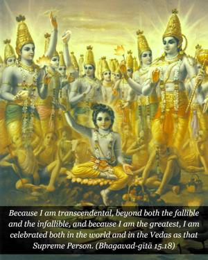
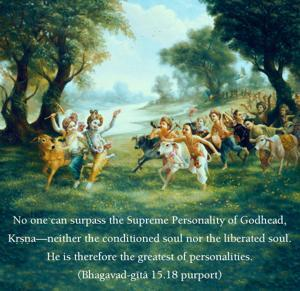
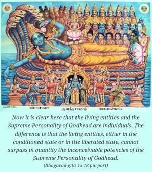
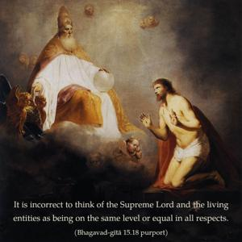
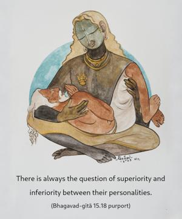

Because I am transcendental, beyond both the fallible and the infallible, and because I am the greatest, I am celebrated both in the world and in the Vedas as that Supreme Person.





No one can surpass the Supreme Personality of Godhead, Kṛṣṇa – neither the conditioned soul nor the liberated soul. He is therefore the greatest of personalities. Now it is clear here that the living entities and the Supreme Personality of Godhead are individuals. The difference is that the living entities, either in the conditioned state or in the liberated state, cannot surpass in quantity the inconceivable potencies of the Supreme Personality of Godhead. It is incorrect to think of the Supreme Lord and the living entities as being on the same level or equal in all respects. There is always the question of superiority and inferiority between their personalities. The word uttama is very significant. No one can surpass the Supreme Personality of Godhead.
The word loke signifies “in the pauruṣa āgama (the smṛti scriptures).” As confirmed in the Nirukti dictionary, lokyate vedārtho ’nena: “The purpose of the Vedas is explained by the smṛti scriptures.”
The Supreme Lord, in His localized aspect of Paramātmā, is also described in the Vedas themselves. The following verse appears in the Vedas (Chāndogya Upaniṣad 8.12.3): tāvad eṣa samprasādo ’smāc charīrāt samutthāya paraṁ jyoti-rūpaṁ sampadya svena rūpeṇābhiniṣpadyate sa uttamaḥ puruṣaḥ. “The Supersoul coming out of the body enters the impersonal brahma-jyotir; then in His form He remains in His spiritual identity. That Supreme is called the Supreme Personality.” This means that the Supreme Personality is exhibiting and diffusing His spiritual effulgence, which is the ultimate illumination. That Supreme Personality also has a localized aspect as Paramātmā. By incarnating Himself as the son of Satyavatī and Parāśara, He explains the Vedic knowledge as Vyāsadeva.